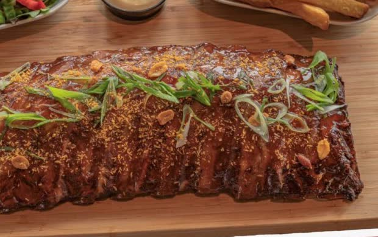
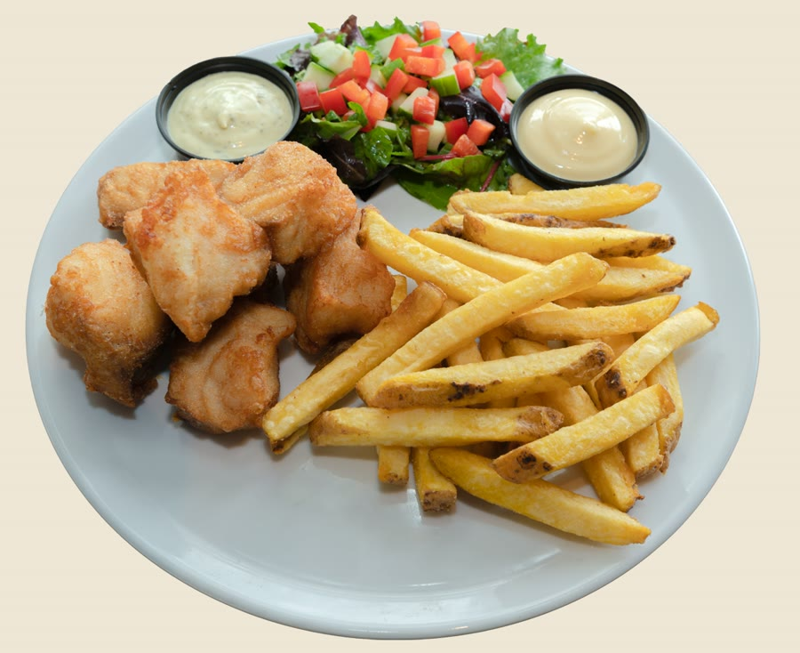
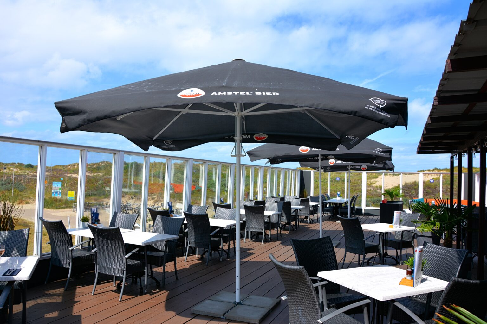
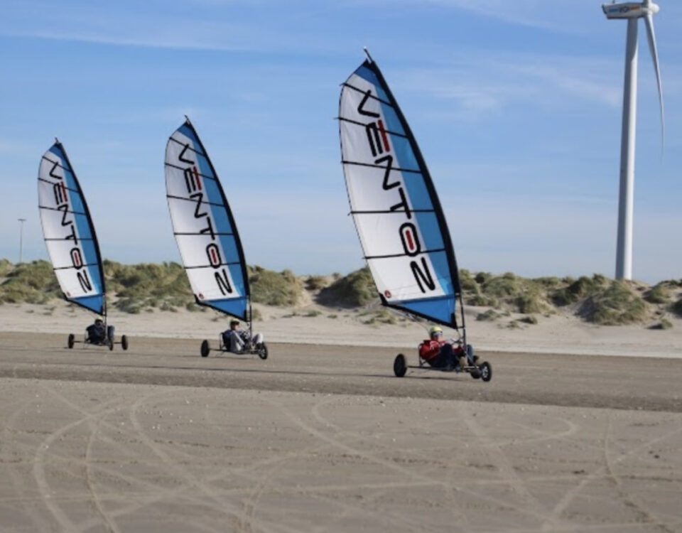
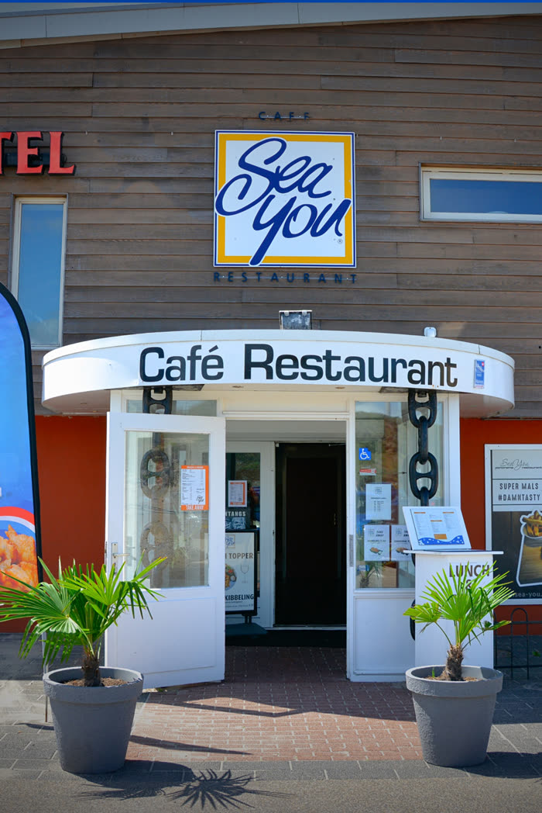

Onze onovertroffen malse
Spareribs 26,50
Keuze uit zoet, pittig of half om half, met huisgemaakte frites en meloen. Kluiven niet nodig: het vlees valt zo van het bot.
Noordpier, Wijk aan Zee
Aan het begin van de Noordpier kijkt u uit op Forteiland, de haven en de schepen die tussen de pieren in- en uitvaren. Op het terras in de zon of binnen bij de open haard.
Woensdag t/m zondag openWo t/m za vanaf 12.00 uur, zo vanaf 11.00 uurHet hele jaar door
“Het uitzicht verandert elke dag, ieder uur. Net zoals de seizoenen, de lucht, de zee en het getij. Ze zijn vertrouwd, maar vervelen nooit.”Café Restaurant Sea You, Reyndersweg 2
Aan het begin van de Noordpier in Wijk aan Zee en Velsen-Noord bent u van harte welkom bij Sea You. Geniet van een drankje en een hapje, een heerlijke lunch of een diner, terwijl enorme vrachtschepen en luxe cruiseschepen voorbijvaren.
Na een strandwandeling, of als u genoten heeft van het opspattende water langs de pier: bij een ondergaande zon op het terras of, als het wat kouder is, gezellig binnen bij de warmte van de open haard.
Loopt het water u al in de mond? Onze super malse spareribs en de lunchtopper: plate kibbeling van kabeljauw met huisgemaakte frites.

Onze onovertroffen malse
Keuze uit zoet, pittig of half om half, met huisgemaakte frites en meloen. Kluiven niet nodig: het vlees valt zo van het bot.

Lunchtopper
Kibbeling van kabeljauw met huisgemaakte frites, ravigottesaus en sla.
Aan het einde van de wereld schitteren spareribs
Ze worden bij ons met liefde gemaaktLees het artikel (pdf)
18jaar specialist
in glutenvrij eten
Wij zijn al 18 jaar de specialist in glutenvrij eten. Alle gerechten op de lunch- en dinerkaart kunnen glutenvrij besteld worden. Ook met elke andere allergie of dieetwens houden we rekening: geef het door bij uw reservering, dan zorgen onze chefs ervoor.
Lunch tot 17.00 uur, daarna diner. Heeft u een allergie? Laat het ons weten.
Met huisgemaakte frites, ravigottesaus en sla.
Tot 17.00 uur, bruin of wit
Keuze uit zoet / pittig / half om half, met huisgemaakte frites en meloen (kluiven niet nodig!). Ook voorgegaard en verpakt in te kopen: vraag naar de mogelijkheden.
Tot en met 12 jaar, ook glutenvrij
Per glas / per fles
Glutenvrij? Alle gerechten zijn glutenvrij verkrijgbaar, op de appeltaart en vlammetjes na (toeslag 1,50, desserts uitgezonderd).
Snacks, vis en spareribs om mee te nemen. Glutenvrij mogelijk.

Voor (bedrijfs)feesten en partijen bent u bij Sea You aan het juiste adres. Sea You is bovendien een officiële trouwlocatie: u kunt hier terecht voor een complete, tot in de puntjes verzorgde bruiloft.
Onze openingstijden passen we aan voor iedere gelegenheid. Vertel ons wat u wenst, dan maken wij een offerte op maat.
Vraag een offerte aan
Het hele jaar door organiseert de Strandfabriek sportieve strandactiviteiten op het superbrede strand bij de Noordpier, vlak bij onze parkeerplaats. Race met een blokart langs de vloedlijn of laat je door het zand trekken met een grote, bestuurbare vlieger. Ook fatbiken, discgolf, boogschieten, zandsculpturen maken of een beachvolleybaltoernooi kan.
Daarna een BBQ of een lunch of diner à la carte met uitzicht. Een glutenintolerantie, allergie of dieetwens in het gezelschap? Geef het door bij de reservering.
Naar de Strandfabriek
Via de Zeestraat naar Wijk aan Zee. Na de Dorpswei linksaf de Zeecroft in en langs het Julianaplein de Reyndersweg op. Na ongeveer 3,5 km bent u bij de parkeerplaats van Sea You. Parkeren is gratis.
Parkeer in Wijk aan Zee (rond de Dorpswei gratis) en loop over het strand of deels door de duinen naar Sea You.
Watertaxi IJmuiden vaart in het seizoen tussen IJmuiden (Sluisplein) en Velsen-Noord, ook met fietsen en rolstoelen. Voor de actuele vaartijden: watertaxi-ijmuiden.nl.
Parttime of fulltime: bediening, zelfstandig werkend kok en keukenhulp.